Brigham Young University · Provo, UTJan 2024 – Apr 2028 (Expected)
B.S. Biochemistry; Minor in Computer Science, with machine learning courses
GPA 3.99 · Science GPA 3.99 · MCAT 519 (96th percentile)
Russell Mercer
Biochemistry, clinical software, and AI at Brigham Young University
Biochemistry student preparing for medical school, with research in radiation oncology, surface chemistry, and cryo-electron tomography. Enjoys learning new things and being challenged in new ways.
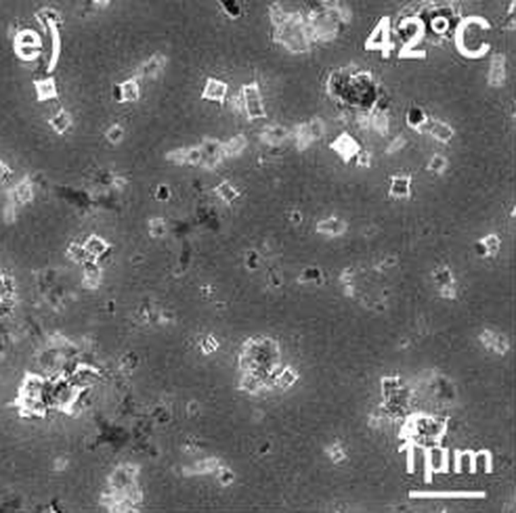
Second author. Ralph AD, Mercer RW, Hall SB, Butikofer BC, Collins CS, Sturgill CJ, Minson PS, Stefik M, Stowers KJ. Langmuir 2026;42(6):4475–4488. doi:10.1021/acs.langmuir.5c05182
Metal-organic framework films usually need a self-assembled monolayer to nucleate on. We grew copper and copper-zinc films directly on a bare substrate by spin coating at ambient pressure, then showed how synthesis temperature controls coverage, crystallite size, and how much of the second metal ends up in the film. I did film synthesis, electron microscopy, and film-thickness analysis.
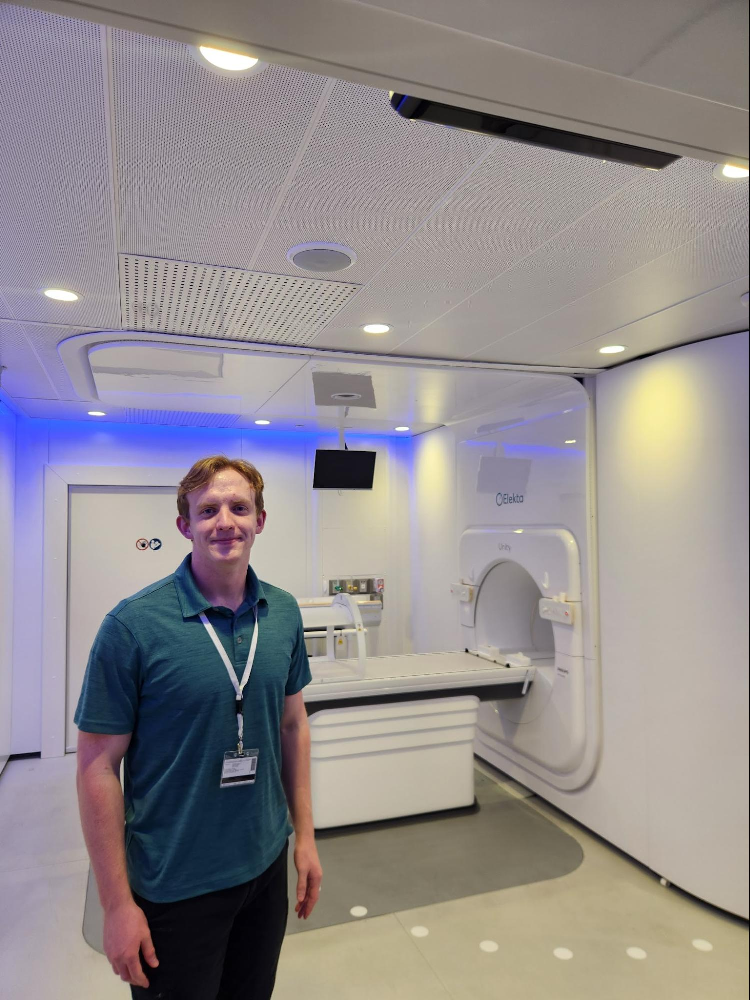
First author. Submitted to the International Journal of Radiation Oncology, Biology, Physics.
Ten patients with ultra-central lung tumors received radiation in five pulses about three weeks apart, with diffusion imaging captured on the machine before every fraction. We asked whether those scans, which nobody was using, can show a tumor responding before it shrinks. The biexponential model fit the onboard signal better than the standard one, and tissue diffusion separated responders from non-responders by the third fraction where the conventional measure did not.
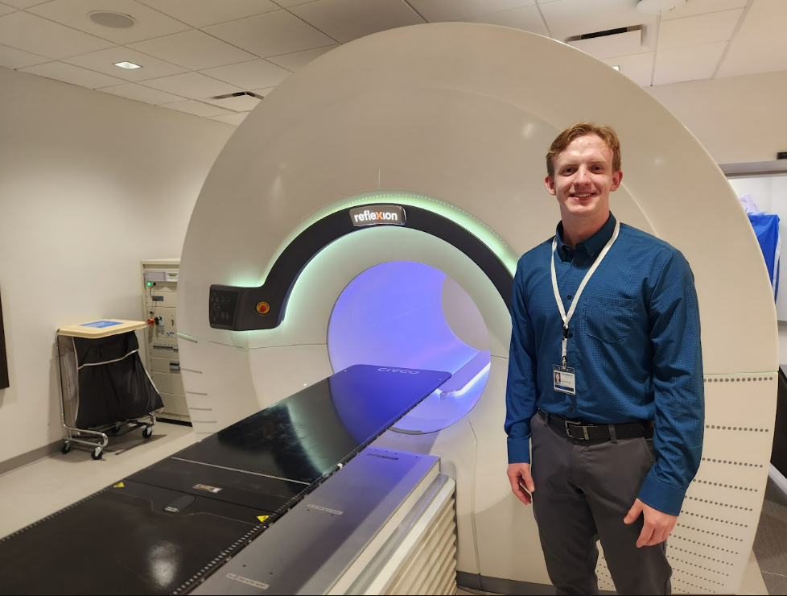
First author.
Biology-guided radiotherapy follows the tumor's live PET signal during delivery instead of padding the target with margin for breathing, so the treated volume can be smaller. Across 17 patients we measured how much smaller, and what it costs: the target came out 19 percent smaller, and the reduction grew with how far the tumor moved. The trade is a wider intermediate-dose region and higher spinal cord and heart maxima, which originate in planning rather than in delivery.
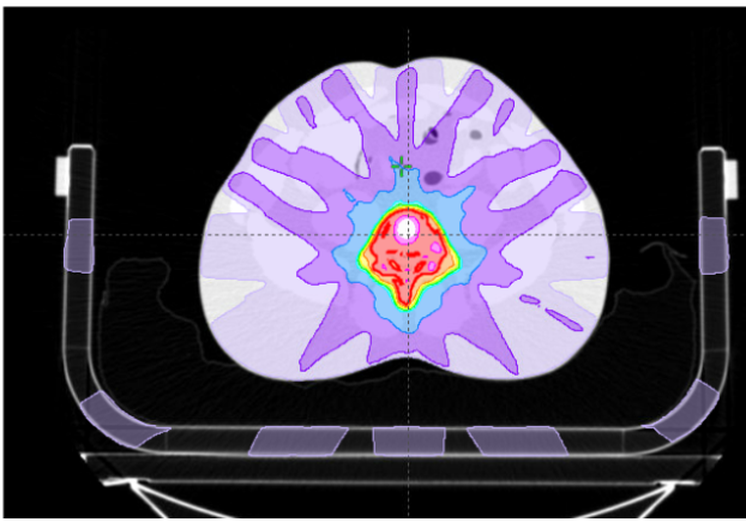
First author.
Adaptive treatment systems replan on the anatomy of the day, but they typically ignore the frame the patient is lying in. We characterized a new low-density frame built to be dosimetrically negligible, with ion-chamber measurements at three energies and four gantry angles plus calculations across eleven patient plans. Attenuation stayed under 3 percent everywhere except beams crossing a side rail, which means the frame can be used on current adaptive platforms without modeling it in the dose calculation.
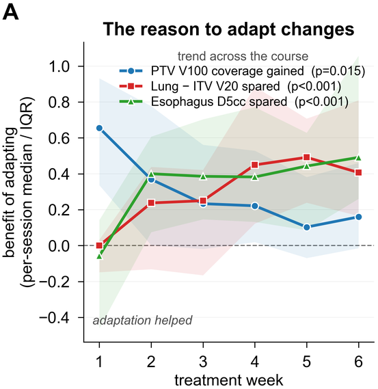
Co-author.
Forty-seven patients with locally advanced lung cancer were treated with one online adaptive session a week, 227 sessions in all, with both the adapted and the scheduled plan computed on the same daily anatomy. Tumors regressed in every histology group, and adaptation improved both target coverage and organ sparing. The benefit rotated over the course, from recovering coverage early to sparing lung, esophagus, and heart late, and no pre-treatment feature predicted it well enough to skip the weekly cadence.
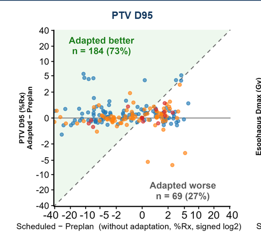
Co-author.
Forty patients treated with stereotactic radiation for early-stage lung cancer on an adaptive platform, with three plan states compared on the same daily anatomy at every fraction: the approved plan, the scheduled plan, and the adapted plan actually delivered. The question is which patients gain enough from adaptation to justify a workflow that roughly doubles time on the table, and whether anything measurable at simulation predicts it. Across 253 fractions, the adapted plan improved target coverage in 73 percent and spared the esophagus in 69 percent.
First author, with Dr. Jie Deng.
Seventy-six patients processed through the pipeline, 23 of them with both complete diffusion imaging and outcome data, paired with chart review for response and failure. It is where the lung study's threshold tool starts being tested against what actually happened to patients, on a schedule that treats every two or three days rather than weeks apart.
First author, with Chitral Chatterjee and Dr. Grant Jensen. Presented as a poster at the Utah CryoEM Symposium, October 8, 2026.
Cryo-electron tomography processing is a chain of a dozen specialized programs that takes months to learn. We put a general-purpose AI coding agent at the controls of that chain on 39 tilt series of E. coli, with a human approving or overriding every parameter, and logged each recommendation as accepted, overridden, or an error a human caught. The point is to measure where the agent genuinely helps a newcomer and where it needs someone who already knows the science.
Co-author, Stowers Lab.
The decomposition chemistry of metal-organic framework films studied in the lab's ultra-high-vacuum chamber, near 10⁻¹⁰ Torr with X-ray photoelectron spectroscopy and mass spectrometry on the same system. I helped build and maintain that chamber, and I am still contributing to the manuscript although my position in the lab ended in May 2026.
Does the adhesin layer on the surface of B. henselae physically block the secretion system underneath it? A published hypothesis says yes, from phenotypes alone, and no tomogram of any species in this genus exists. I scoped and proposed the project and Dr. Jensen approved it. Nothing has been cultured and no grids have been frozen; the work starts once the biosafety committee approves the protocol. Full write-up on the Physical Sciences tab.
What the invasion machinery of this parasite looks like in three dimensions, which would be the first cryo-electron tomography in the genus. It needs a focused ion beam milling workflow that does not exist yet for any Babesia, so building one is part of the project. Nothing ordered, nothing cultured, no grids. Full write-up on the Physical Sciences tab.
An AI agent that interviews the authors of cryo-EM papers to collect the reasoning a paper never carries: what they ruled out first, why they tried that, and which step the field quietly does differently. Dr. Jensen originated the idea and I am building it. Nothing is working yet.
I joined Dr. Grant Jensen's lab in August 2026, where I work with cryo-electron tomography (cryo-ET). The technique rapidly freezes cells to preserve their native structure, then images them from many angles to reconstruct their internal organization at molecular resolution. My work has two parts: imaging bacteria and parasites that have never been studied this way, and building AI agents and skills that help researchers get through the image-processing workflow.
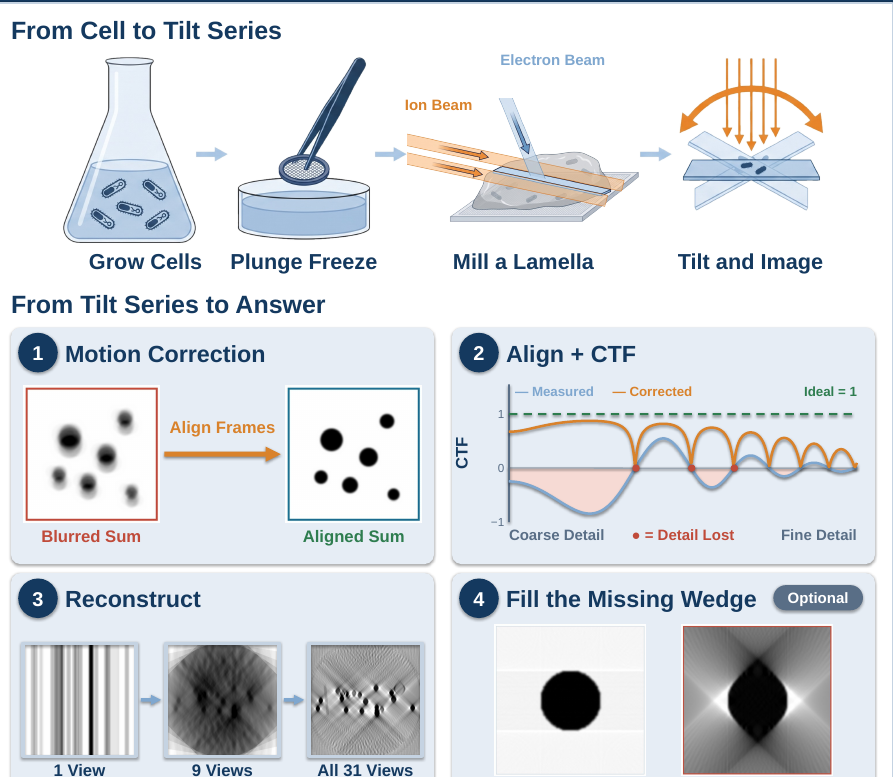
I proposed two projects on organisms associated with tick-borne infections. Both can occur alongside Lyme disease, and a patient may carry several at once. I have tested positive for both of these pathogens by PCR. Neither genus has been studied by cryo-ET, so these projects would produce the first structural images of either organism using the technique.
Bartonella henselae is a gram-negative bacterium transmitted mainly through scratches or bites from infected cats, and it is the primary cause of cat-scratch disease. It usually brings swollen, tender lymph nodes, fever, fatigue, and headaches, though it can lead to neurological, ocular, or cardiac complications. The cells run about 0.3 to 0.5 µm wide, which means they can be frozen and imaged whole on BYU's Krios without additional thinning, and they divide roughly every three hours, so cultures are practical to keep.
There is an interesting biological question behind the project. B. henselae carries a dense surface layer of adhesins, and one published hypothesis holds that this layer interferes with the secretion system the bacterium uses to deliver proteins into host cells. That hypothesis rests on observed phenotypes rather than on direct structural evidence. Cryo-ET could show whether the organism's actual structure supports it.
The second project is Babesia duncani, a tick-borne, malaria-like parasite that invades red blood cells using a specialized structure at one end of the cell, the apical complex. It causes babesiosis, which typically brings fever, chills, fatigue, sweating, headaches, and hemolytic anemia as infected red blood cells are destroyed. Severe infections can cause organ dysfunction, particularly in people who are immunocompromised or who have no functioning spleen. A 2026 study identified a previously unreported tubulin rosette in the apical region of a related species using light microscopy, but that technique cannot resolve the rosette's molecular organization. Cryo-ET could provide a closer look.
This one carries extra technical difficulty. Babesia cells are too thick to image intact, so they require focused ion beam (FIB) milling at the University of Utah, and no established FIB-milling workflow exists for Babesia. Developing and optimizing one is part of the project.
I wrote the proposals and experimental plans for both, and Dr. Jensen approved them in October 2026.
Both matter beyond the pictures. Seeing how an organism is actually built is what makes it possible to design against it, because a drug has to fit something real, and for these two nobody has seen the thing yet.
Processing cryo-ET data means coordinating about a dozen specialized programs, each with its own parameters and its own failure points, and learning that workflow can take a researcher several months. Processing is generally the bottleneck of the field.
In a separate project I built a workflow in which a general-purpose AI coding agent operates that pipeline, and I tested it on 39 E. coli tilt series. The agent recommends and executes processing steps, and I logged every recommendation as accepted, overridden, or an error the human reviewer caught. That log is what makes it possible to evaluate the agent's performance rather than judge whether it appears to work.
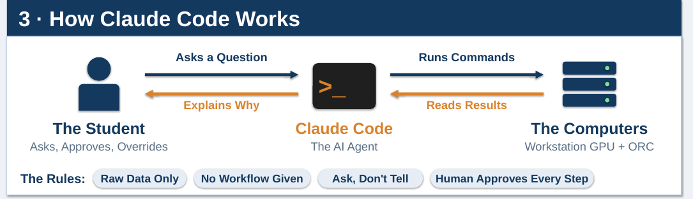
During testing the agent identified two incorrect values recorded by the microscope and independently checked the tools it was using. It also made mistakes, documented as part of the evaluation; in every case it eventually caught itself. I presented this work at the Utah CryoEM Symposium on October 8, 2026. A manuscript is in preparation, to follow a few instructional videos. This is a collaborative project with Chitral Chatterjee.
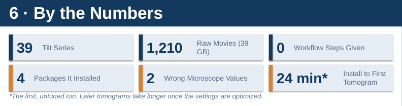
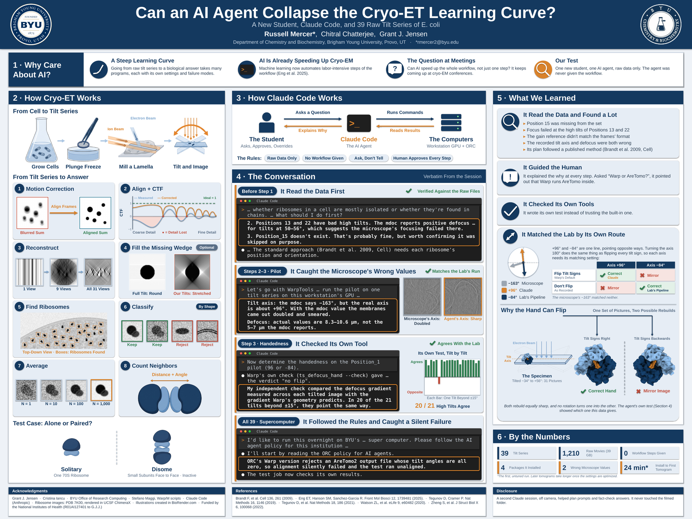
Another project addresses something papers teach poorly: the practical knowledge researchers accumulate while developing and troubleshooting experiments. A paper describes the final method, not the approaches abandoned along the way, the problems met, or the small adjustments that made a protocol work.
Dr. Jensen proposed building a database to preserve that knowledge. I am developing an AI agent that interviews the authors of cryo-EM papers about their experimental decisions and their troubleshooting, then compiles what it gathers into a shared database researchers anywhere can use, both to learn from and to train their own agents. The project is still in development and a working system does not exist yet.
In the lab's September 2026 bootcamp I grew E. coli BL21 Star (DE3) carrying a human ferritin H expression plasmid, prepared LB and 2×YT media, and ran overnight starters, induction, and a plasmid miniprep on the lab's protocol. I have done the culture steps so far. In October I completed Thermo Fisher's Resolution Evolution course, with hands-on time on the Vitrobot for plunge-freezing and on the Krios.
I spent two years in Dr. Kara Stowers' inorganic chemistry lab researching metal-organic framework (MOF) thin films. MOFs are porous crystalline materials with potential applications in catalysis and chemical separations. Our research focused on growing these films directly on untreated substrates, without the self-assembled monolayers typically used to initiate growth, while controlling the incorporation of a second metal.
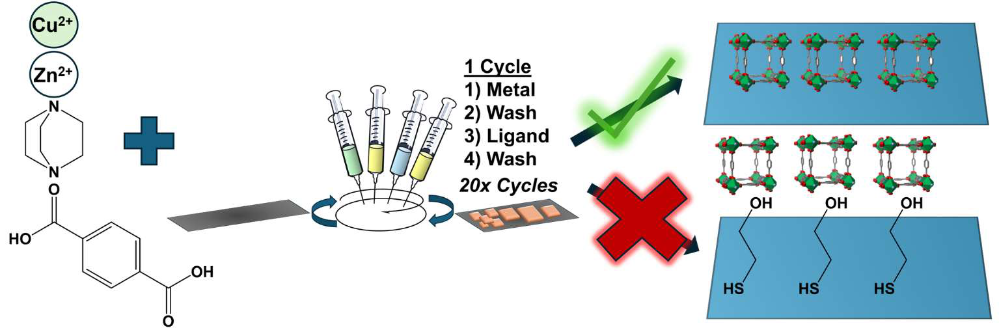
I synthesized copper and copper-zinc framework films through sequential spin coating, cycling metal and linker solutions onto the substrate. I characterized the resulting films using scanning electron microscopy and measured film thicknesses in ImageJ. Our work examined how growth temperature affected film coverage and crystallite size.
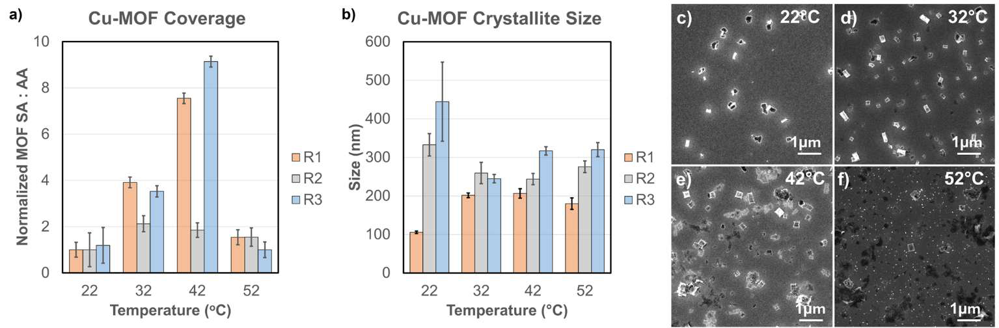
I also spent considerable time building, troubleshooting, and maintaining two custom laboratory instruments: a flow reactor used for catalysis experiments and an ultra-high-vacuum chamber equipped with X-ray photoelectron spectroscopy and a mass spectrometer. The chamber operated at pressures approaching 10⁻¹⁰ Torr. Maintaining it involved leak checking, bakeouts, flange work, and troubleshooting the vacuum system. I also helped rebuild the spin coater's vacuum system when it failed.
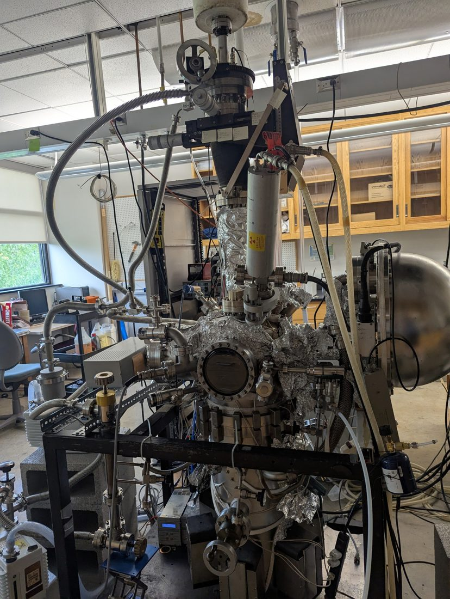
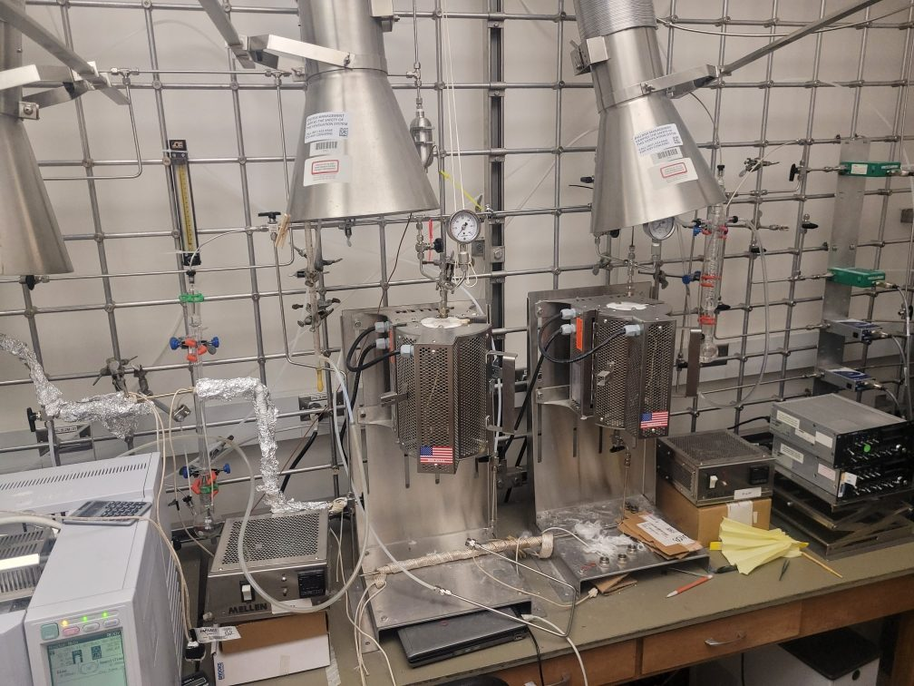
Alongside my own work, I trained two newer students in spin coating and scanning electron microscopy. The research resulted in a publication in Langmuir, where I am second author. I presented the work at the BYU Student Research Conference in 2025 and 2026, and at the American Chemical Society spring meeting in Atlanta in March 2026.
A second manuscript examining decomposition chemistry using the vacuum chamber is in preparation. Although my lab position ended in May 2026, I have continued contributing to it.
Taken. CHEM 384 Biochemistry Methods, MMBIO 241 Molecular and Cellular Biology Lab, CELL 363 Advanced Physiology Lab.
This semester. CHEM 584 Advanced Biochemistry Methods 1, a master's-level course.
Winter 2027. CHEM 489 Structural Biochemistry, CHEM 586 Advanced Biochemistry Methods 2.
Lecture courses behind them. PWS 340 Genetics, MMBIO 240 Molecular Biology, CHEM 482 Mechanisms of Molecular Biology, CHEM 381M Biochemistry Fundamentals, CHEM 468 Biophysical Chemistry.
The department's diffusion MRI processing pipeline had passed through several graduate students. When the last one left it was sitting in his personal account on one GPU workstation, held together by virtual environments nobody could rebuild, and the account was scheduled for deletion. A postdoc hired for different work was about to inherit it, and the earlier lung study could not be rerun without back-end access.
I rebuilt it as a web application, working with the Claude Code agent and checking every scientific decision myself. It collects each patient's imaging from the hospital network shares, repairs broken files, converts DICOM to NIfTI, detects the pulse protocol, corrects distortion, runs two neural-network denoising steps, fits the IVIM and ADC models, and registers the images across treatment days, flagging anything that looks wrong as it goes. A bulk runner sits on top: enter the patient identifiers, pick the steps, and each patient gets a tab that moves through the chain while the runner schedules CPU and GPU work, watches disk space, archives finished patients to the server drives, and exports everything as one zip.
The interface is where a physician or physicist actually works. An MRI viewer lines up anatomy, contours, and parametric maps slice by slice with whole-tumor histograms per day. A parameter comparison view puts ADC, Dp, Dt, Fp, and R side by side across days. An image creator renders publication-quality panels from chosen slices. A threshold creator applies a cutoff to outline the treatment-resistant core of a tumor and exports contours the treatment planning system can import. The fit checker lets you click a single voxel and see its measured signal against both model fits. Reliability statistics cover acquisition parameters, signal-to-noise, geometric distortion, registration, and fit quality.
It processed all 76 pancreas patients in about 2.5 days of continuous server time. The 10-patient lung study had taken roughly a week by hand. Hospital IT moved the application to the Radiation Oncology Application Team for clinical use, with a plan to run it on a standalone server for the whole department, and the MRI vendor has asked about building the processing into the machine. I wrote the hand-off document, which lists what a clinical version still needs, and trained the postdoc who took it over.
The honest limit: a clinical version has to finish in three to five minutes at the console, and mine takes about an hour per patient. That gap is the part of research I find most interesting, and it is most of why I want to train as a physician-scientist.
The pipeline code belongs to UT Southwestern and is tied to its systems, so it is not public. The screenshots above come from the application interface and carry no patient information.
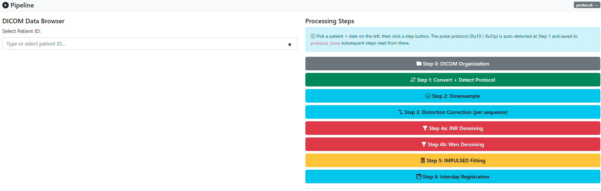
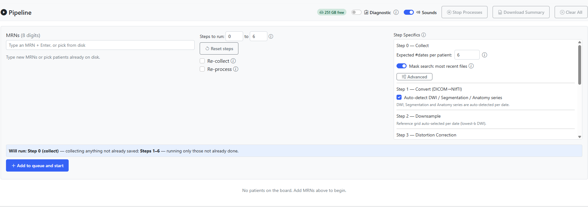
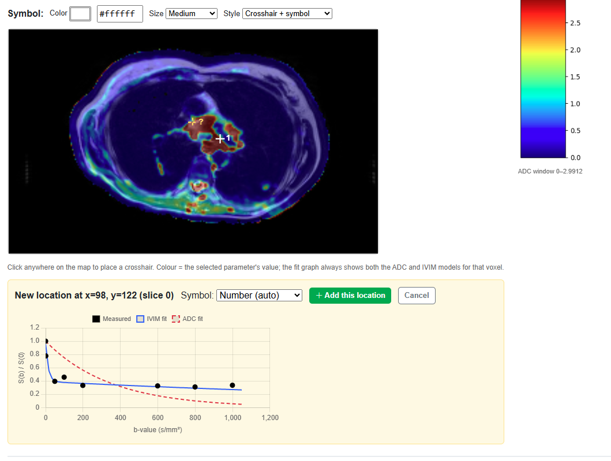
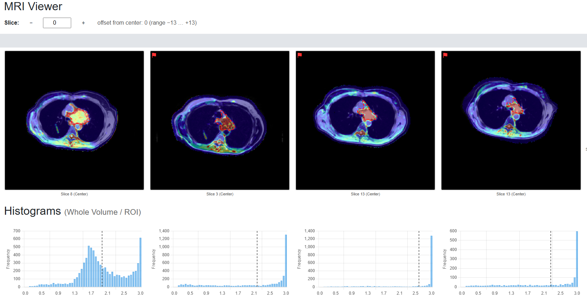
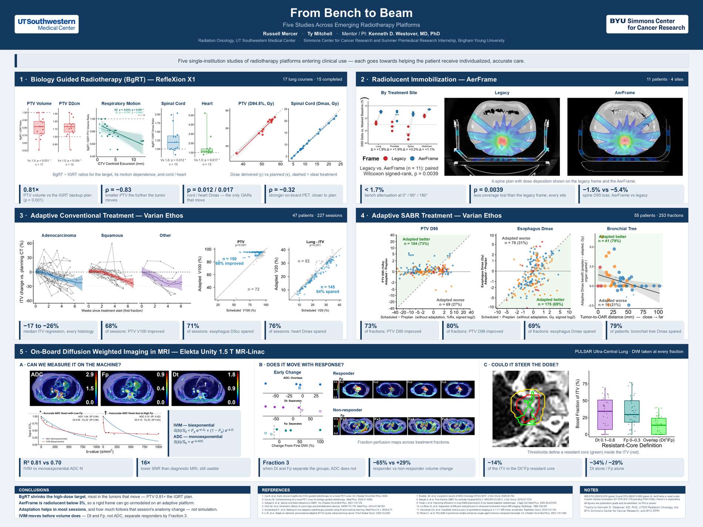
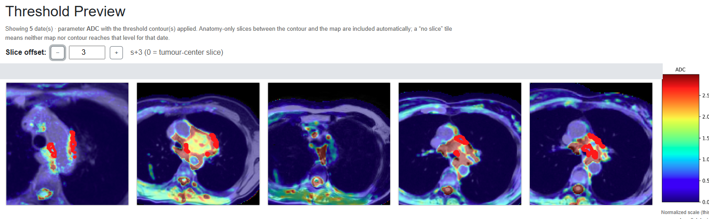
The Unity combines an MRI scanner with a linear accelerator, and before every treatment it records diffusion-weighted images that nobody used clinically. Dying tumors lose cells, so water moves more freely through them, which should show up as a rising apparent diffusion coefficient. If that holds, a physician could see a tumor responding during treatment, weeks before it shrinks on CT. These patients received PULSAR, where the radiation pulses are spaced weeks apart, and no one had published diffusion imaging in PULSAR patients.
I worked with a team of medical physicists on 10 patients, each carrying about 10 GB and more than 10,000 DICOM images with meaningless file names, all processed on hospital servers. Every patient was missing at least one diffusion series, because therapists had not backed them up and the consoles had been wiped. The scan field often was not centered on the tumor, so contours ran outside the map, and only 50.9 percent of sessions had data usable as scoped; I found a way to include partially covered sessions rather than drop them. The simulation scanner had 15 to 20 times the signal-to-noise of the machine itself, so the two could not be compared directly.
Rather than force the original claim, I reframed the study into three aims: whether quantitative diffusion values can be pulled reliably from the machine's own imaging, whether those values move opposite to tumor volume as biology predicts, and how a diffusion-defined target would differ from the clinical one. Out of curiosity I made per-session histograms and saw values piling up at exactly 3. The exporter was capping them, which had been dragging later-fraction averages down. I fixed the pipeline, re-exported, and reran everything; because the figures rebuild from raw data, the fix cost an afternoon instead of a month.
The biexponential model fit the on-board signal better than the standard one, which is the first useful finding: the simple measure everyone reaches for was the wrong one here. Changes measured inside the clinical target and inside a tight tumor-only contour agreed almost exactly, so the result does not depend on who drew the contour. Through the third fraction, tissue diffusion and perfusion fraction separated responders from non-responders, and the conventional measure did not. Over the full course only tissue diffusion held that separation.
The piece I care about most is the threshold tool: a diffusion cutoff that outlines a treatment-resistant core inside the clinical target, which could take extra dose in the same treatment, and which also shows where the target should expand. Dr. Deng presented examples from the paper and the pipeline at a physics conference last summer.
Eight of the ten patients had finished treatment at data lock, so this is hypothesis-generating, and the threshold is not yet tied to outcomes. Testing it against outcomes is what the pancreas study began.
Submitted title: Onboard Intravoxel Incoherent Motion Diffusion-Weighted MRI Tracks Early Tumor-Volume Response in Ultra-Central Lung Tumors Treated With PULSAR.
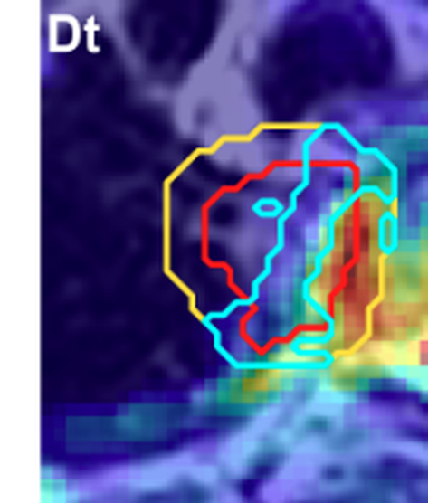
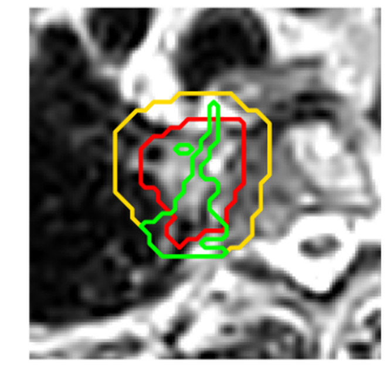
RefleXion is a new machine, cleared by the FDA and installed at only a few U.S. centers. The patient takes up a PET tracer, two detectors on the gantry find the tumor, and the beam follows it in real time. More than a year after the first patients finished treatment, nobody had checked independently whether the delivered dose matched the plan, or how it compared with standard image-guided radiotherapy. The technology is commercially stalled for want of exactly that evidence.
I watched a treatment and an engineer walkthrough first, so I understood the workflow before touching the data. Then I exported the plans into Aria-Eclipse and wrote a C# script that pulls the relevant dose data for every patient and plan into organized spreadsheets. The hard part was naming: every physician draws and labels structures differently, so a lung might be one structure or two, and a patient might carry several planning target volumes with unrelated names. The script resolves most of that on its own and asks a human only when it genuinely cannot tell two structures apart. A Python step filters the raw export into templates I designed with Dr. Westover, and R scripts build every figure and table from the raw data automatically.
Partway through, a physicist raised a problem that could have explained my less favorable organ-dose findings: post-treatment evaluation assumes organs sit where they were at simulation, even though the beam follows a moving tumor. To test it I extracted dose fall-off metrics, reconstructed each patient's respiratory motion from the backup plan's contours since motion is recorded nowhere, wrote an algorithm for each organ's distance from the target, and ran about 1,000 checks per patient that flagged every case for or against the effect.
Nearly all of those checks supported my conclusion that the effect was minor. Across 17 patients, the PET-guided plan treated a target 19 percent smaller than the image-guided backup, smaller in 15 of 17 patients and unchanged in 2, and the reduction grew with how far the tumor moved with breathing. The cost shows up elsewhere: a wider intermediate-dose region, and higher spinal cord and heart maxima. Those originate in planning rather than in delivery, which matters, because it means they are fixable.
A physicist on the team took the organ-dose findings to his contacts at the manufacturer around the summer physics meeting, and the company is revising its post-treatment evaluation in an upcoming release. The paper says plainly where the technology helps and where it does not, which is not the commercially convenient answer. I rewrote it more than eight times, including two complete restarts, and it is in final circulation among co-authors now.
Published title: Dosimetric Cost of a Smaller Target When Using Biology-Guided Radiation Therapy for Lung Cancer.
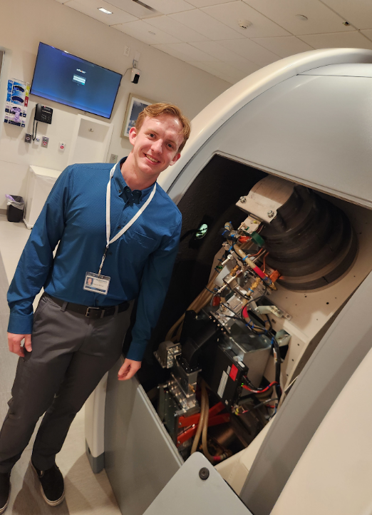
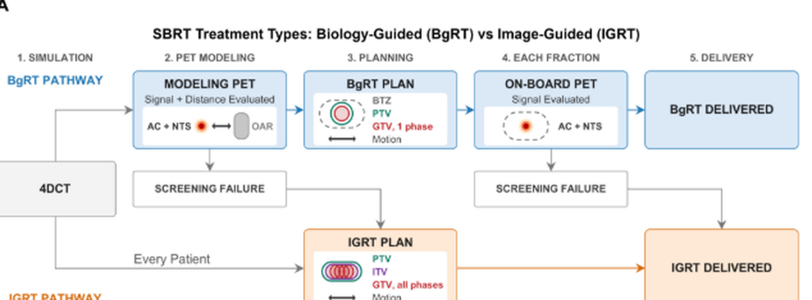
Dr. Westover invented and patented a patient immobilization frame built from a composite that is nearly transparent to radiation. It has been in use at UT Southwestern for over a year and will be marketed to other centers, but no physics study existed to show how much dose the older frames were absorbing before the beam reached the tumor.
The cohort did not exist in any database. A patient had to have been treated on a specific machine, simulated in a legacy frame, and treated at least once in the new one, so I hand-screened about 50 patients' records and threw out warped scans, patients never treated, and unfamiliar frames. From what was left I picked 11 patients to mirror real practice: 3 spine, 3 prostate, 3 lung, and 2 abdomen, mixing fixed-field and arc therapy, some with titanium hardware, across two legacy frame types and both anterior and posterior target positions. I ran the attenuation calculations with the physicists, compared 12-field, 18-field, and arc plans with the frame masked to air against the frame present, and added ion-chamber bench measurements at 6, 10, and 15 MV across several beam angles.
The new frame reads at about −928 Hounsfield units on patient imaging against −713 for the legacy frame, which is the physical reason for everything that follows. Measured attenuation stayed under 2 percent anywhere away from the side rails, and crossed 3 percent only for beams passing through a rail at the lowest energy. Across the phantom and patient plans it stayed between 0.6 and 2.5 percent.
That number matters more than it sounds. Adaptive systems replan on the anatomy of the day and typically do not model the frame at all, so a frame this transparent can be used on current platforms without modeling it, and a legacy frame cannot. I wrote the first draft and the manuscript is in final circulation among co-authors. The limits are plain: eleven patients at one institution, with a dosimetric endpoint rather than a clinical one.
Working title: Radiolucent Stereotactic Body Frame for Online Adaptive Radiation Therapy.
The device diagram comes from Dr. Westover's patent and stays off this site until he says otherwise.
The lung study produced a threshold tool that outlines treatment-resistant tissue, but nothing tied it to what happened to the patients. Dr. Deng brought me onto a pancreas study to start closing that gap: do the same diffusion measurements track how pancreatic tumors respond to stereotactic radiation?
I ran all 76 patients through the pipeline I had rebuilt, and 23 of them turned out to have both complete diffusion imaging and outcome data. I did the chart review for response at three months and for local and distant failure over time, since most three-month results in this last-line population were stable or not evaluable. A Python script rebuilds each patient's plot and notes from the chart-review sheet, so adding a patient does not mean redrawing anything.
One early signal is worth the work: a patient who failed both locally and distantly about eight months after treatment showed tissue diffusion falling by the third fraction, the opposite of what a dying tumor does, while a patient with stable disease showed it rising. In principle a physician could have seen that early enough to change the plan. The trends run opposite to the lung study, and I think the spacing explains it, since these patients were treated every two or three days rather than weeks apart, leaving less time for tissue remodeling between pulses. Analysis is still underway.
I am an officer of the BYU AI Association and lead its weekly AI in Research meeting, a group working out how researchers in different fields can use these tools without handing over the judgment that makes the work theirs. I wrote the proposal for the group, which is public as the AI-In-Research repository.
What I bring to it is mostly evidence rather than opinion. I built a clinical imaging application with an AI coding agent in weeks instead of months, and I am running a controlled test in the Jensen Lab of where an agent helps and where it gets a pipeline wrong. Both sides of that show up in the meetings.
I am also honest about the cost. These tools make research faster, and they change how people think, not only what they produce. As more writing and reasoning gets handed over, the average output gets more capable while the individual gets less practiced: less nuance, less argument, less of the slow work understanding is made of. Holding the acceleration and the cost at the same time is why I would rather help shape how AI enters science than just use it.
I attended the AI for Social Innovation Conference at Aspen Grove on October 21, 2026, run by BYU's Ballard Center, as the BYU AI Association's representative. The organizers wanted someone from the association and I was given a seat at the Data Sovereignty and Inclusion working table, alongside a UN ambassador, the chief operating officer of a Māori media organization that built a community-owned speech model, and people from industry and other universities. The table's question was who owns community data, the models trained on it, and the value those models create.
I release research tooling under the Mercer Science organization on GitHub as it becomes good enough for someone else to use.
paper-engine is the main one: skills, scripts, and strategies that take an academic paper from an idea toward a draft. It covers the parts that are mechanical but easy to get wrong, such as keeping an outline, figures, statistics, and references consistent with each other while the draft changes underneath them. I built it out of the manuscript work at UT Southwestern, where I rewrote one paper more than eight times.
github-ai-project-manager is a set of skills and hooks that let an AI command-line agent maintain a research project on GitHub on its own, so the record of what happened keeps up with the work.
AI-In-Research holds the proposal behind the BYU AI Association group I lead.
More will go up as it stops being specific to my own machine. The repositories are at github.com/mercer-science.
In Dr. Jensen's lab I am testing whether a general-purpose AI coding agent can run the cryo-electron tomography processing pipeline while a human keeps every scientific decision. The agent proposes, installs, and runs each tool; I approve or override each parameter; and every recommendation is logged as accepted, overridden, or an error I caught. I presented it as a poster at the Utah CryoEM Symposium in October 2026, and the full write-up sits on the Physical Sciences tab.
At the AI for Social Innovation Conference in October 2026 I sat at the Data Sovereignty and Inclusion working table as the BYU AI Association's representative. The people around it included a UN ambassador who chairs work on science and technology for development, the chief operating officer of a Māori media organization that built a community-owned speech model, and executives from industry.
The problems the table named are concrete. Communities whose data and languages train these systems rarely control them or see any of the value. Training data skews Western. Research teams arrive in a community, take its data, publish, and leave. Principles exist in abundance, but almost none have been turned into terms a community and a company could both sign and keep.
I helped start two pieces of follow-up work: a short op-ed that puts the problem in plain language, and a draft agreement setting out who may use what data, for what purpose, who decides, what returns to the community, and how a community says no. The group means to take a preliminary draft to the UN and to private developers, and the work continues.
The line from the table I keep coming back to is that data is not the new oil but the new soil, which is a different claim about what sovereignty is for. For me it connects directly to the clinical work: the imaging I processed at UT Southwestern came from patients who will never see the paper, and the question of what the people who generate data are owed does not stay abstract for long.
I direct Early Learning Essentials, a BYU Y-Serve program that puts student volunteers into preschool classrooms serving families with low incomes. I started as a program director in August 2024 and have been lead program director since March 2025, which means recruiting volunteers, running the leadership team, scheduling the classroom shifts, and keeping the partnership with the Provo center working. I still take classroom shifts myself.
Pre-med peer mentor, BYU Pre-Med Association, since October 2026, advising other students on coursework, research, and applications.
Trained the postdoc who inherited the diffusion MRI pipeline at UT Southwestern, along with the hand-off document that says what a clinical version still needs. A tool nobody else can run is a tool with an expiration date, which is the lesson the original pipeline taught everyone the hard way.
Taught two newer students in the Stowers Lab to run spin coating and electron microscopy, including film-thickness analysis.
Peer mentor, BYU Office of First Year Experience, June 2024 to February 2025. I co-taught two sections of the university's introduction course with faculty and met regularly with 45 freshmen.
Full-time missionary, October 2021 to December 2023, where I planned and delivered more than 80 trainings to groups ranging from 8 to 100 people, trained four new missionaries, and ran housing, travel, and technology logistics from the mission office.
Provo, UT · rmercer2@byu.edu · linkedin.com/in/russell-mercer · orcid.org/0009-0003-6387-969X · github.com/mercer-science